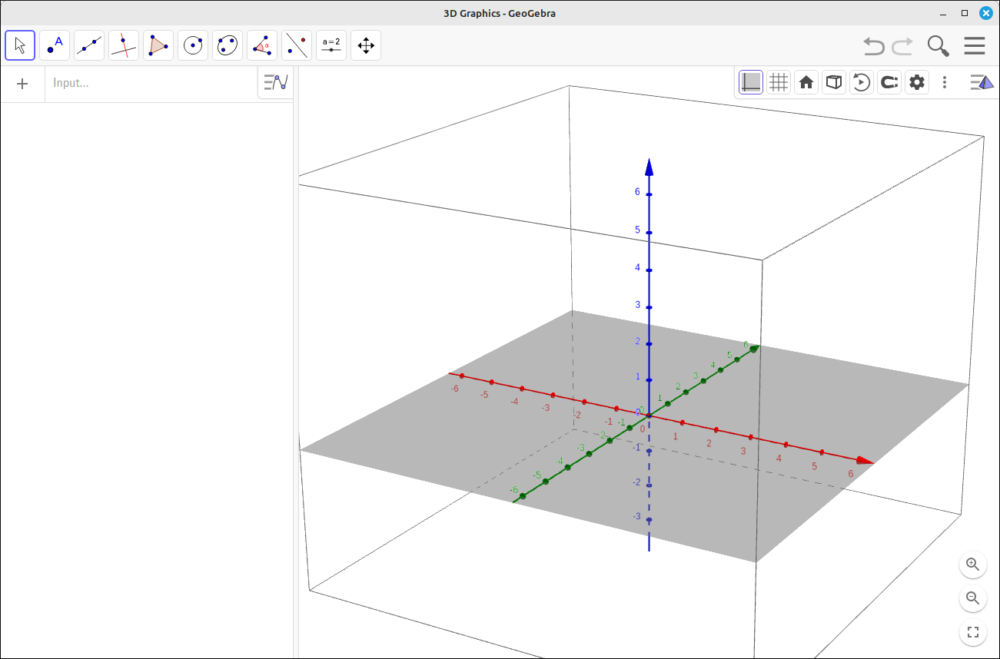
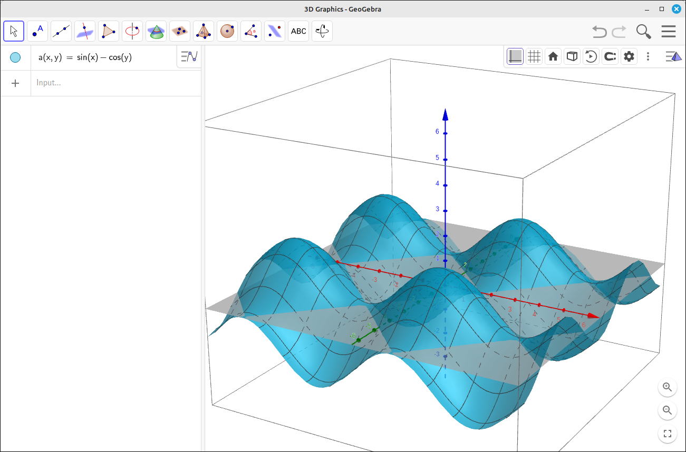
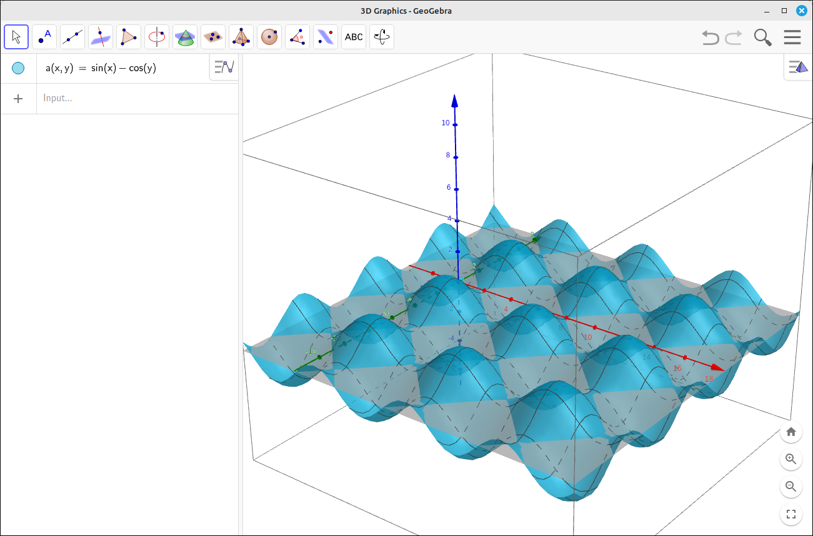
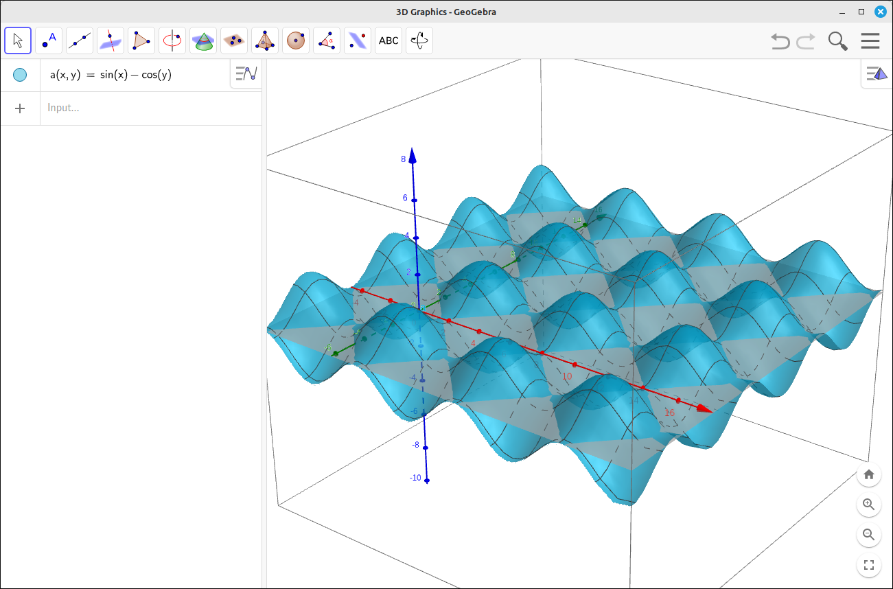
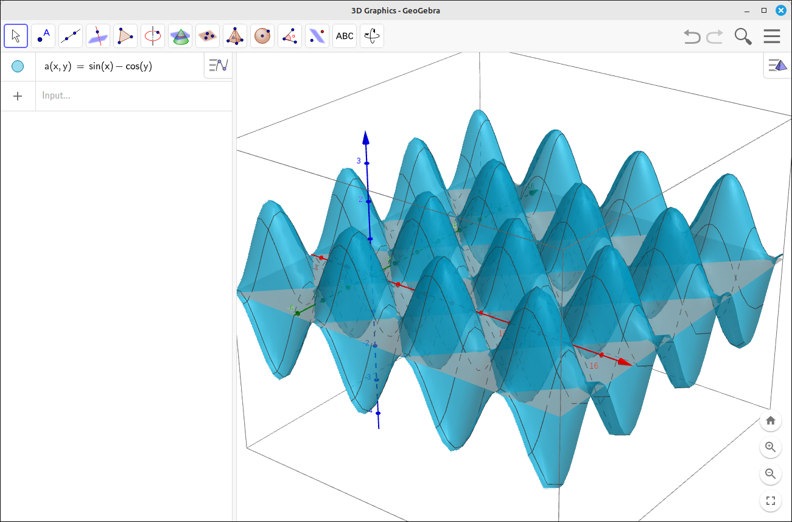

3D Graphs#
GeoGebra has a very sophisticated 3D graphics system with many features that make visualizing concepts in multivariable Calculus easy and informative. It also offers some very nice features for logical domains. When you shift into 3D mode by changing the perspective to 3D graphics you will see somthing like the following.

3-D Layout#
The options in the upper right allow you to adjust the view to fit your needs. In the image above we turned on the Use Clipping and the Show Clipping options.
To help illustrate the functionality of the 3D graphics system input the egg carton function \(sin(x)-cos(y)\). This will be assigned the function name a(x, y).

3-D Layout with Example Surface#
Note a few things about the image. First it uses a semitransparent surface to allow you to partially see through the surface to the shape behind it, lines that are behind portions of the surface or xy-plane are dashed, and the surface is shaded using the base color of the object.
Camera Rotation#
A click and drag on the view will rotate the camera around the view. The camera is a spherical camera in that its position is on a sphere centered at the center of the viewing box and the camera is pointed to the center of the viewing box.
View Zooms#
The mouse wheel will zoom the view area in and out. For example, if we zoom out a little we can see that the axes have changed and that more of the surface is visible.

Zoom Example#
Translating the View#
To translate the view you use a combination of shift and the mouse. If you hold down the shift key and left click on the view, but not on one of the coordinate axes, there will be two movement icons that appear, one for xy-plane translations and one for z direction translations. The left mouse button will toggle between these two. Then simply click and drag the graph to where you want it. For example, after some shifting of our above example we have.

Translation Example#
Scaling an Axis#
To scale an axis is similar to translation. Hold down the shift key and left click on one of the coordinate axes, there will be a scaling icon appear on the axis, click and drag to scale the axis without scaling the other two. For example, after scaling the z-axis a little.

Scaling Example#